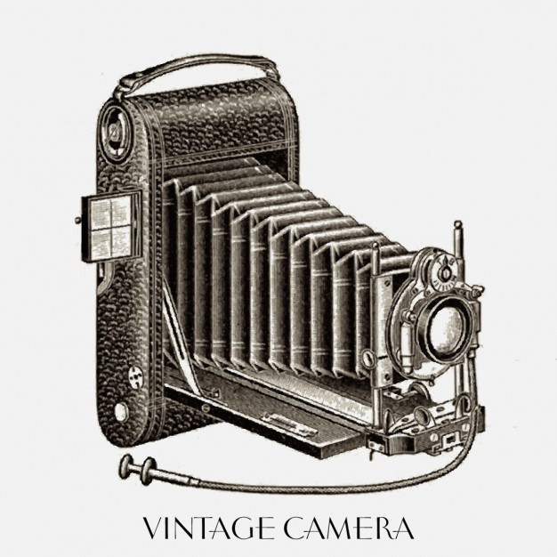
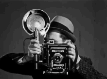

Definicja

Fotografia
Fotografia (gr. φως, phōs, D. phōtós – światło; gráphō – piszę, graphein – rysować, pisać; rysowanie za pomocą światła) – zbiór wielu różnych technik, których celem jest zarejestrowanie trwałego, pojedynczego obrazu za pomocą światła. Potoczne znaczenie zakłada wykorzystanie układu optycznego, choć nie jest to konieczne np. przy rayografii.
Fotografia tradycyjna a analogowa
Bardzo często fotografię tradycyjną (opartą na wykorzystaniu światłoczułych własności halogenków srebra) kompletnie mylnie określa się fotografią analogową. Jest to poważny błąd merytoryczny, gdyż fotografią analogową można określić proces reprodukcji obrazu z pomocą urządzeń elektronicznych analogowych (np. fotopowielacz). Wynikiem działania światła na taki element światłoczuły jest powstanie sygnału analogowego, a nie efektu fotochemicznego na błonie filmowej czy innym nośniku emulsji światłoczułej.
Na podstawie informacji zawartych w serwisie wikipedia.